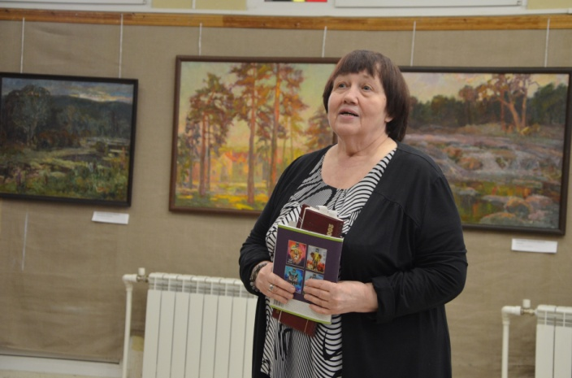

С 1 по 10 марта 2021 г. в Воронеже проходил городской краеведческий конкурс компьютерных презентаций и видеороликов школьников «Мы воронежцы!», посвященный памятникам воинам и мирным жителям, павшим в боях за г. Воронеж и во время оккупации и обстрелов города. Председатель правления ВГОО «СП «Воинское содружество»» Кашкин С.Н. был членом жюри конкурса.
20 марта 2021 г. в 11.00 - 13.00 состоялось юбилейное собрание членов ВГОО «СП «Воинское содружество»», на котором были подведены итоги пяти лет формирования организации, намечены планы развития писательского Союза, награждены юбиляры писательской организации, принята в члены Союза Римская Ирина Викторовна. С приветственным поздравительным словом выступили член «Союза писателей им. Лермонтова» Сурагина Татьяна Анатольевна, член литературно-поэтического клуба «Элегия» Галина Петренко.
Практически каждый – 15 из 18 членов союза писателей - выступил со своеобразным творческим отчётом: новыми стихами, песнями, предложениями по улучшению работы Организации.
В кандидаты в члены Союза была единогласно принята Тишанинова Надежда Васильевна - краевед, педагог, отличник народного просвещения РФ, создатель музея литовской литературы, искусства и культуры им. Юлиуса Янониса, его руководитель с 1981 по 2010 гг.
22 марта 2021 г. в Воронежском государственном промышленно-экономическом колледже состоялись литературно-поэтические чтения, посвящённые памяти члена ВГОО «СП «Воинское содружество»», бессменному руководителю городского литературно-поэтического клуба «Элегия» С.С. Диточенко.
На чтениях Кашкин С.Н. познакомил присутствующих с жизнью и творчеством Светланы Диточенко, своим литературным творчеством (стихами и афоризмами).
Он передал слово самобытному поэту-песеннику Часовских Нине Петровне, которая представила весь спектр своего поэтического таланта, познакомила присутствующих с новыми песнями о малой Родине – селе Стрелица.
17 апреля 2021 г. состоялось собрание членов ВГОО «СП «Воинское содружество»» на базе Воронежского государственного промышленно-экономического колледжа в актовом зале. Кашкин С.Н. вручил благодарности с формулировкой: «За плодотворную работу в Воронежской городской общественной организации «Союз писателей Воинское содружество», большой вклад в развитие литературного творчества и в связи с пятой годовщиной создания городской писательской организации» Бугриму В.А., Рындину В.Д., Часовских Н.П. После награждения они выступили перед собравшимися членами Организации с кратким отчётом о проделанной работе. Благодарность также была вручена издателю, члену Организации Филонову А.Н. с формулировкой: «За плодотворную работу в Воронежской городской общественной организации «Союз писателей «Воинское содружество»», большой вклад в пропаганду литературного творчества и в связи с пятой годовщиной создания городской писательской организации». Кашкин С.Н. представил собранию проект плана работы Организации на 2021 г., состоящий из 10 пунктов, в котором было отражено взаимодействие в социальными партнёрами в плане проведения мероприятий, издательская деятельность, дистанционные формы работы на случай запретов проведения очных мероприятий. В частности, обсуждалась дальнейшая судьба музыкально-поэтического клуба «Элегия», ранее возглавляемого Диточенко С.С. Поступило предложение Рындина В.Д. о том, чтобы в дальнейшей работе клуба было воплощено всё то, что хотела вложить и осуществить в его деятельности Диточенко С.С., но, увы, не успела. Присутствующие члены организации поддержали предложение правления о том, что «Элегия» должна быть «кузницей кадров для союза писателей и средством её самовыражения». Кашкин С.Н., представил собранию 3 рекомендации (Долгих М.Ю., Кашкина С.Н. и Часовских Н.П.) на принятие Тишаниновой Н.В. в ряды членов ВГОО «СП «Воинское содружество»», а также 2 книги автора: о воронежском поэте Алексее Прасолове и «Село Крутое – село святое…». Далее последовало выступление самой Тишаниновой Н.В., которая представила свою новую книгу, родословную «Всё, что было…», прочитала несколько своих стихотворений.
Вопрос о принятии Тишаниновой Н.В. был вынесен на голосование сначала для членов Правления, затем – для всего Собрания в целом. ИТОГ: «ЗА» единогласно в обоих случаях.
Кашкин С.Н. торжественно вручил удостоверение члена ВГОО «СП «Воинское содружество»» Римской И.В., ранее принятой в ряды Организации по совокупности опубликованных работ.
С 7 по 21 июня 2021 г. Воронежская городская общественная организация «Союз писателей «Воинское содружество»» проводит детский поэтический онлайн-марафон, посвящённый 80-летию начала Великой Отечественной войны. Принимаются видеозаписи выступлений учащихся 8–15 лет. Марафон проводится в двух номинациях «Стихи любимого автора», «Авторские стихи».
